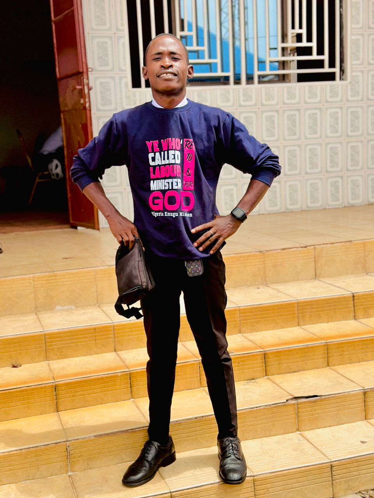

About Me
Hi! My name is Sullayman Junior samai. I was bor and grow up in Sierra Leone!
Sierra Leone
Sierra Leone, country of western Africa. The country owes its name to the 15th-century Portuguese explorer Pedro de Sintra, the first European to sight and map Freetown harbour. The original Portuguese name, Serra Lyoa (“Lion Mountains”), referred to the range of hills that surrounds the harbour. The capital, Freetown, commands one of the world’s largest natural harbours.